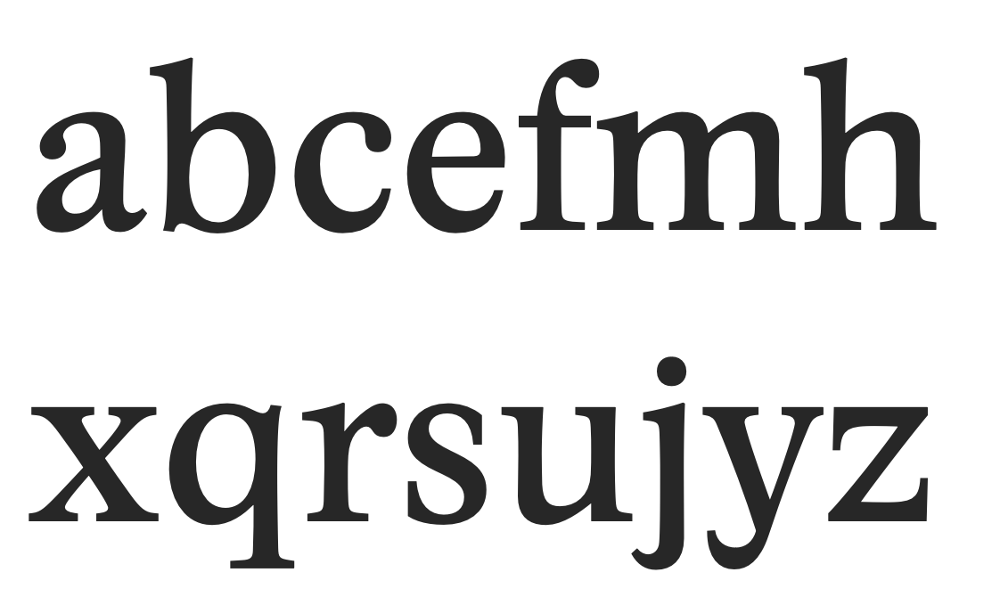
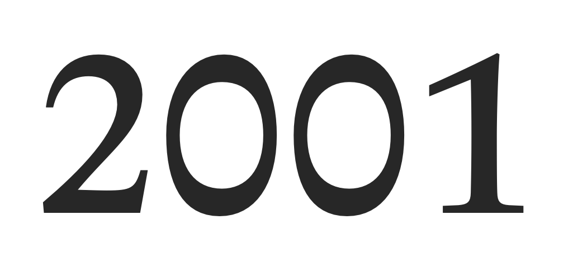

Academica
Interesting faces, ep1
Academica is a typeface I found out when reading aeon (a digital magazine in Science and Humanities). Academica is designed by Josef Týfa for scientific texts. The original design was cut and cast in metal in 1968, and in 2003, Týfa and František Štorm worked together to rework it for digital printing.
Academica shares some similarities with Charter in tall x‑height and emphasize on legibility, but the similarity pretty much ends there. Comparing to Charter, Academica is considerably blacker. And comparing to Charter’s stoic stint on curves1, Academica is lavishly rounded, tapered, bent, squished and stretched. In fact, I don’t even know why am I comparing it to Charter, Academica reminds me more of another typeface (that I dig), Cooper Black.

The alien-looking 0 is perhaps the most salient character (pun intended) in Academica. Instead of simply narrowing 0 to distinguish it from capital O, Academica “flipped” it such that the horizontal stroke is thicker than the vertical. The 0 is really the culmination of the overall vibe of Academica—little roundish goofiness here and there, slightly throwing the reader off; but when you zoom away, you see a legible, realistic academic typeface.

I love the color of Academica, it’s thiccc ;-) Use it for body text, and the dense, full color is beautiful. Looking at a block of Academica, you can almost feel the energy of live imbued in every corner. Also, the tall x-height means you can pack more lines into a page, increasing the information density.
Overall, Academica feels humane to me. It is a practical typeface for serious scientific publications, but in the same time has its very own quirky character. I’m very fond of it. It isn’t that expensive either. If you buy it on myfonts.com, each font costs $44 (at the time of writing). So regular, italic and bold2 combined costs $132. That’s more than a cup of coffee, but still less than 20 cups (I think?)
Some more specimen:
Further reading: